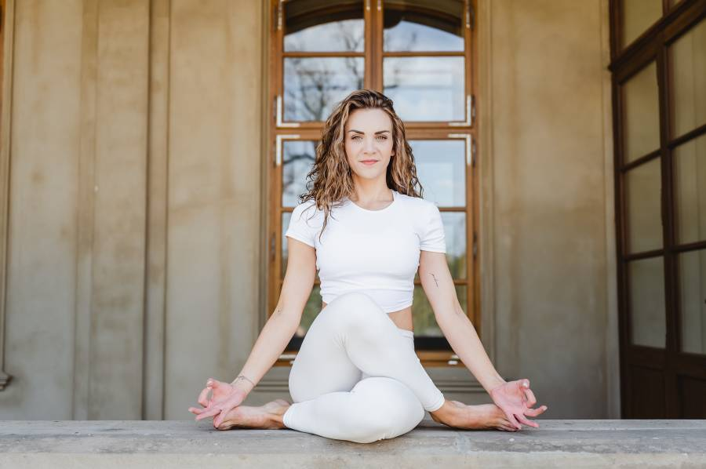

Fyzio · Hatha · Power · Vinyasa
Daniela Šťastná
Jógu aktivně praktikuje od roku 2014. V dubnu 2023 dokončila akreditovaný 200hodinový kurz MŠMT od Yoga4Everybody se specializací na fyzio jógu, hatha jógu, power jógu, vinyasa jógu, těhotenskou a restorativní jógu.
„Ve svých lekcích aktivně asistuji cvičícím, využívám éterické oleje a zpěv manter. Jsem zvědavá na vaši jógovou cestu a budu se na vás těšit.“